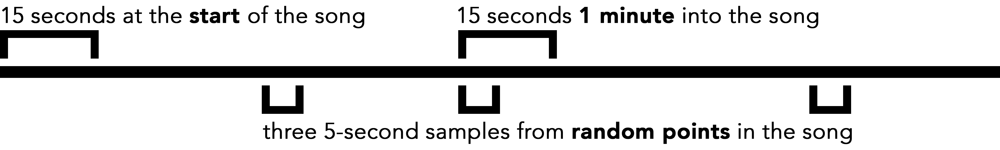
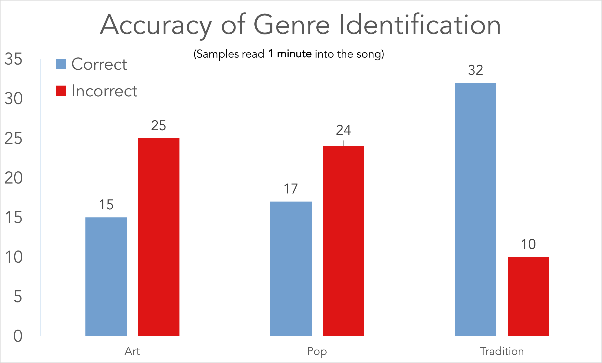

neural audio: music information retrieval using deep neural networks
Grey Patterson (Linfield, CCT), Andrew Pfalz, and Jesse Allison (LSU School of Music/CCT)


Scan the QR code for the more verbose digital version of this poster.
Music is rich in information - from things like what key and time signature are being played in up to the sociocultural context in which the lyrics were written.
The field of music information retrieval exists to provide musicologists with automated tools. Complex tasks like genre recognition remain out of reach. To solve this problem, we use neural networks: a form of machine learning that consist of nodes connected by weighted edges. Input is propagated through the network from node to node along those edges.
Neural networks are based on the structure of the human mind: nodes serve as neurons, and weighted lines between them alter the input values as they flow through the network.
A deep neural network is one with several hidden layers. (Any layer other than the input and output layers is considered 'hidden.')

Neural networks are an alternative to traditional programming. Instead of writing an algorithm yourself, you provide training data - inputs, and the output expected: ([0, 821, 1643,...],"art")
The software uses stochastic gradient descent to minimize the cross-entropy of the correct versus the calculated answers.
The output can be either a direct categorization or a softmax (weighted probability distribution). We chose to use softmax throughout.
We split input into three categories: art, popular, and traditional. For reading in a song from the library, we used three windows:
Each window of samples was fed into the neural network, which attempted to categorize it into one of the three genres; all inputs were annotated with 'correct' answers, used for training.
Overfitting proves to be a significant problem, but adjusting for it shows that randomizing samples within the song increases accuracy - though, at the same time, it decreased precision.

We broke song stems and mixes into four categories: vocal solo, guitar solo, drum solo, and ensemble 'other.'

We broke each song into windows of 1-3 seconds, with .5-1.5 seconds of overlap. In training, four files (one from each category) were read in concurrently, randomizing the input to avoid overfitting. In evaluation, we fed an entire song through sequentially, yielding an array of categorization results. With that, we generated an array of start/stop times and their categories. The graph above is a visual representation of this result.
We found that using raw samples, rather than FFT data, yielded higher overall accuracy.